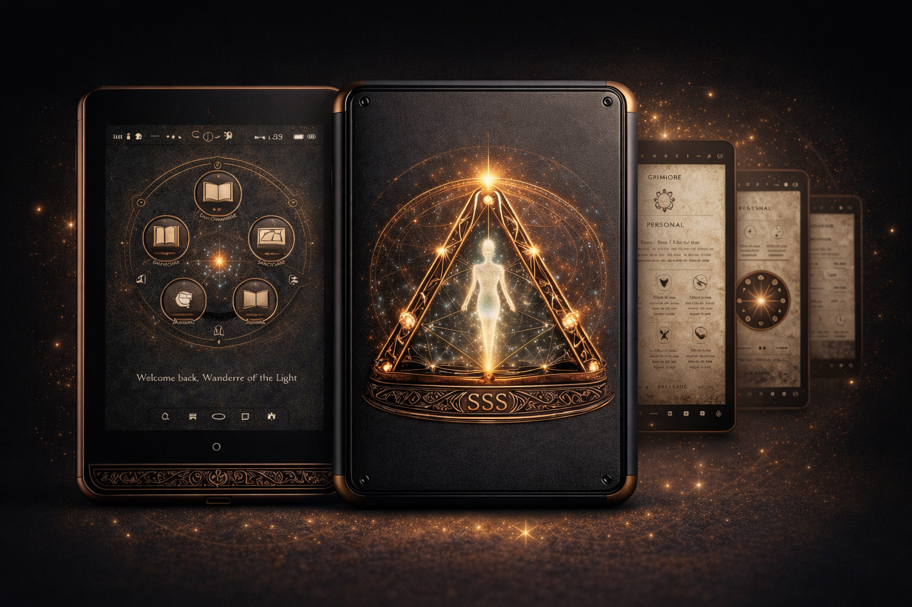

The Lifestyle
The Shielded Grimoire™ creates intentional spaces. Spaces where the nervous system resets. Where ritual meets engineering. Where focus is reclaimed.

Low-EMF Hardware. Encrypted Mindspace. Neurodivergent-Aware Wellness Architecture.
Modern devices are engineered for stimulation — not nervous system regulation. Constant wireless emissions, high-frequency exposure, and digital overload contribute to mental exhaustion, anxiety, and cognitive fragmentation — particularly for neurodivergent individuals (ADHD, AuDHD, autism spectrum).
No mainstream device is built for energetic quiet, mental clarity, or low-EMF spiritual wellness environments.
Copper Faraday mesh grounding layers reduce wireless emissions. E-Ink screen eliminates blue light stress. Designed intentionally for minimal signal interference.
Not an iOS app. Not Android. The Shielded Grimoire™ runs as a dedicated pre-installed ecosystem. Meditation guides, herbal libraries, journaling worksheets, ritual tools, and expanding theme packs.
Built-in encrypted diary system for private documentation, emotional processing, and neurodivergent journaling support.
The Shielded Grimoire™ creates intentional spaces. Spaces where the nervous system resets. Where ritual meets engineering. Where focus is reclaimed.
Built from lived experience — navigating mental overload, isolation, and the absence of grounded tech tools. Spiritual Security Shield™ was created to merge nervous-system safety, neurodivergent awareness, and intentional low-EMF design.
This is not aesthetic mysticism. This is engineered sanctuary.
Seeking early strategic partners to develop prototype hardware and launch the Shielded Grimoire™ ecosystem.